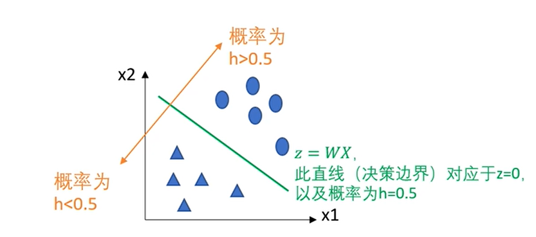
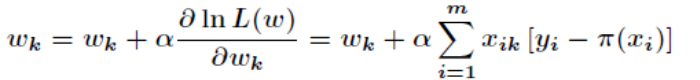
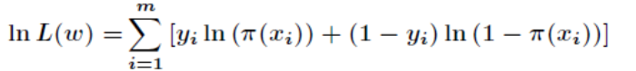
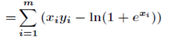

算法可视化平台之逻辑回归
参数动画展示←
- 1. 根据不同的分类画出不同形状(1为矩形，0为圆)
- 2. 根据迭代过程中 当前参数作出分界直线
l：z(x) = w0 * x1 + w1 * x2 + b = 0
- 3. 将各点坐标分别带入z(x)函数 决定所画图形颜色( h
<0.5为红，h>0.5为蓝) 以区分是否分类正确
- 4. 依次迭代，直至所划分的阈值为止

-
您设置的梯度上升步长α为：
-
采用梯度上升法更新w和b:

-
当前参数 w1 =
-
当前参数 w2 =
-
当前参数 b =
-
x = w0 *x1 + w1 * x2 + b
-
logistic函数: Π(x)= 1 / (1 + e^(-x)) = e^(x) / (1 + e^(x))
-
对数似然函数:

=
-
当前参数w1 =
-
当前参数w2 =
-
当前参数b =
-
P(Y=1 | x)= 1 / (1 + e^(-x)) = exp(x) / (1 + exp(x))=
-
P(Y=0 | x)=1 / (1 + exp(x))=
-
因为P(Y=1 | x) P(Y=0 | x)，则预测分类为：
- 参数w0动画展示
-
- 参数w1动画展示
-
- 参数b动画展示
-